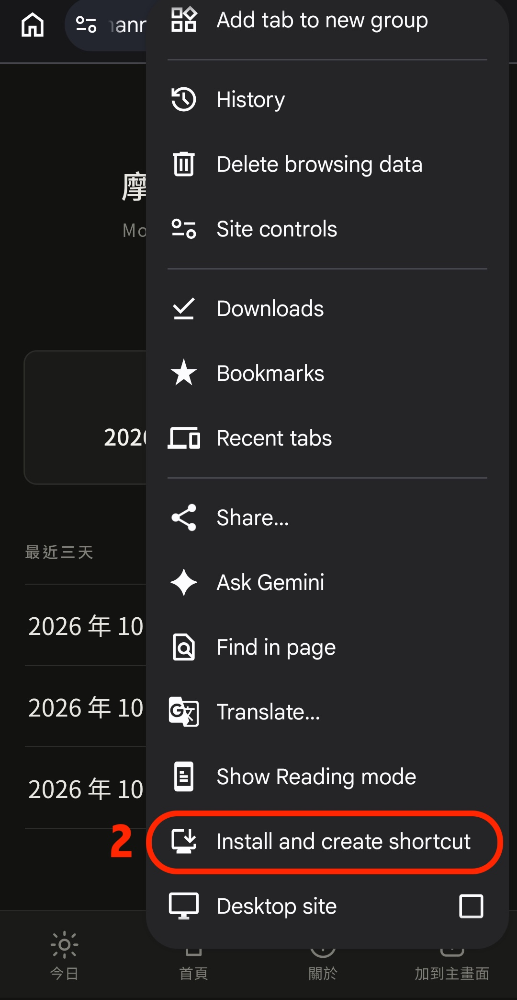
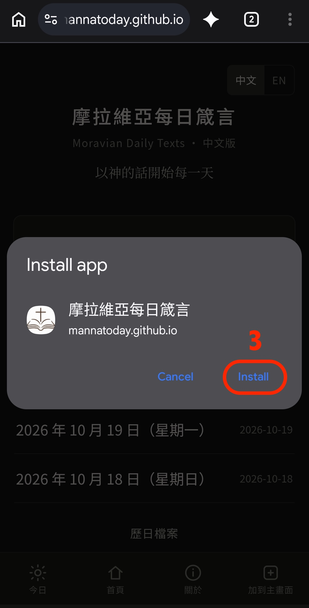
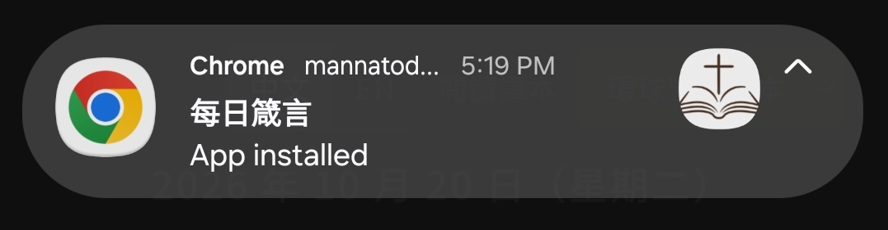
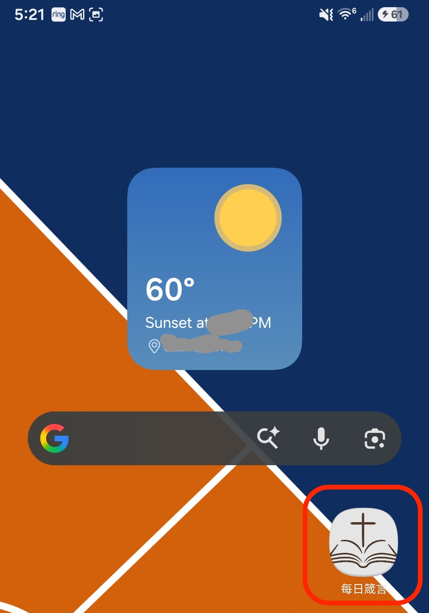

加到手機主頁Add to Phone
加到手機主頁之後，會出現「每日箴言」圖示。點圖示就打開。After you add it, a 每日箴言 icon appears. Tap the icon to open the reading.
你已經從主頁的圖示打開。You already opened this from the home-screen icon.
這個瀏覽器可以直接安裝，按下面的按鈕即可。This browser can install it directly.
下面以 Android 手機的 Chrome 為例。選單若是英文，對照圖裡紅圈標出的那一項。The pictures below are Android Chrome. If the menu is in English, tap the item circled in red.
-
打開「安裝或建立捷徑」Choose Install and create shortcut
用 Chrome 打開這個網站，點右上角的選單，選「安裝或建立捷徑」。圖中英文是 Install and create shortcut。Open this site in Chrome, then open the menu and tap “Install and create shortcut”.

-
按「安裝」Tap Install
跳出視窗後，按「安裝」。圖中英文是 Install。裝好時手機會提示已安裝。When the window appears, tap Install. The phone then says the app is installed.


-
主頁出現圖示The icon appears
回到手機主頁，會看到「每日箴言」。之後從這個圖示打開即可。On the home screen, look for 每日箴言 and open the reading from that icon.

iPhoneiPhone
請用 Safari 打開這個網站。點畫面下方的分享按鈕，再選「加入主畫面」。Open this site in Safari. Tap the Share button at the bottom, then “Add to Home Screen”.